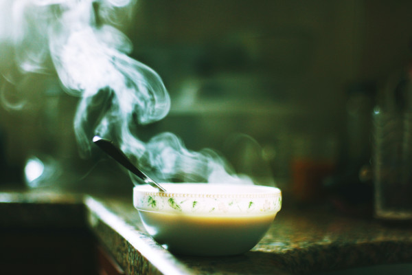

Bean Soup

Description
A healty, easy to make bean soup.
The perfect comfort food. Gluten free and suitable for celiacs.
Ingredients
- 3 cans borlotti beans
- 1 clove garlic, chopped
- 1 tablespoon parsley
- salt to taste
Steps
- Put all the ingredients in a pot and add 1,5 l of water.
- Bring to a boil. Reduce temperature and let it boil lightly for about 1 hour.
- Use a blender to mix together until smooth.
- Serve with gluten free bread or crostini.